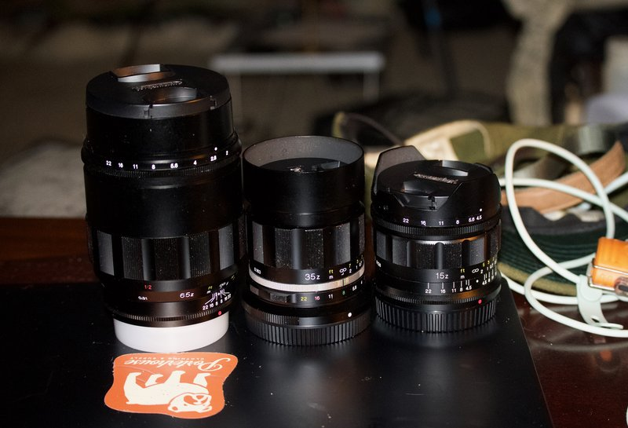

shane_null
65mm_Voigtländer_lanthar
Voigtländer Macro APO-Lanthar 65mm f/2
found this used 2025-09-22
came from an estate sale
I got an affordable deal on this
a collector with hundreds of thousands of dollars of camera gear
